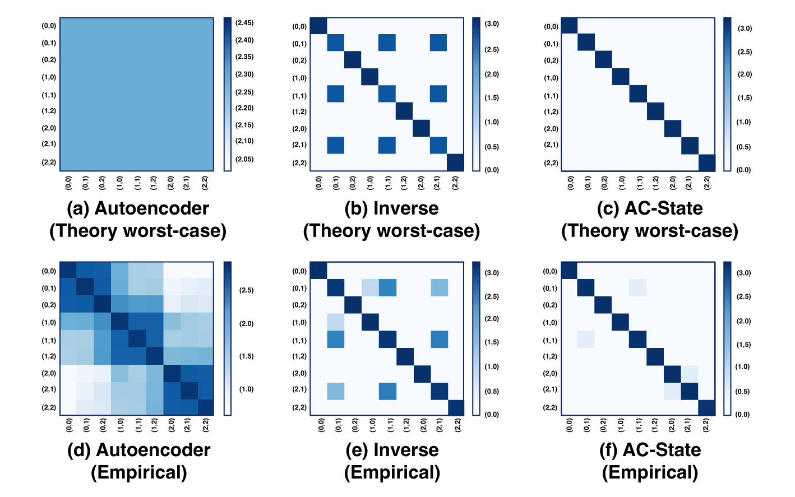
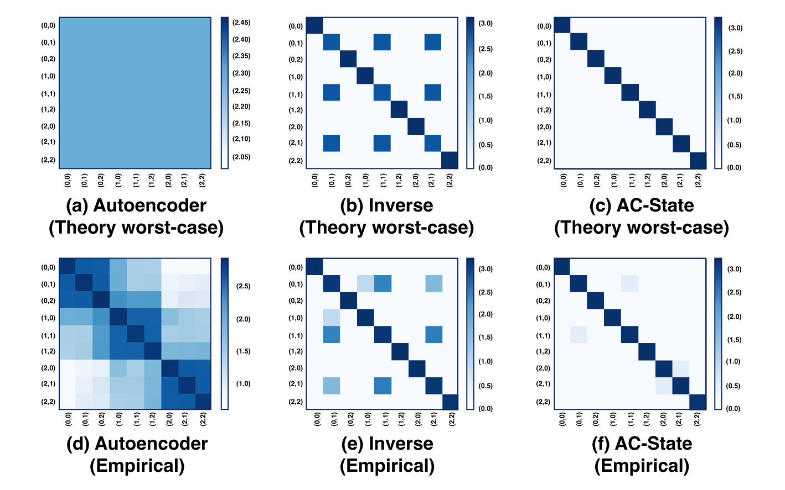

Significance Statement
The AC-State algorithm discovers a latent representation of a system from a sequence of sensory observations and actions taken by an agent interacting in the system, while requiring no external supervision (such as rewards or labels).
This consists of predicting actions from observations with the smallest possible representation. This representation provably captures all of the information which is necessary for controlling the agent while discarding all irrelevant or distracting details.
Previous approaches either fail to capture the full state or fail to ignore irrelevant information.
We demonstrate this on a robot arm where we are able to recover the position of the arm using only a high-resolution video and recorded actions, while ignoring complex background distractors.

 
